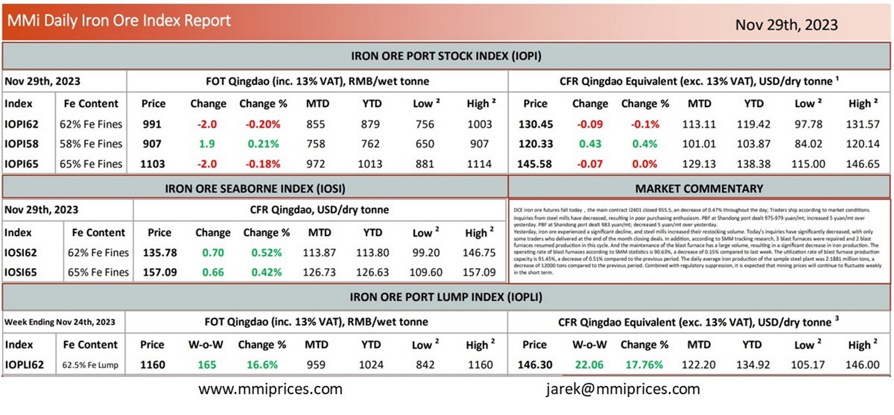

DCE iron ore futures fall today，the main contract I2401 closed 955.5, an decrease of 0.47% throughout the day; Traders shipaccording to market conditions. Inquiries from steel mills have decreased, resulting in poor purchasing enthusiasm. PBF at Shandong port dealt 975-979 yuan/mt; increased 5 yuan/mt over yesterday. PBF at Shandong port dealt 983 yuan/mt; decreased 5 yuan/mt over yesterday. Yesterday, iron ore experienced a significant decline, and steel mills increased their restocking volume. Today’s inquiries have significantly decreased, with only some traders who delivered at the end of the month closing deals. In addition, according to SMM tracking research, 3 blast furnaces were repaired and 2 blast furnaces resumed production in this cycle. And the maintenance of the blast furnace has a large volume, resulting in a significant decrease in iron production. The operating rate of blast furnaces according to SMM statistics is 90.63%, a decrease of 0.15% compared to last week. The utilization rate of blast furnace production capacity is 91.45%, a decrease of 0.51% compared to the previous period. The daily average iron production of the sample steel plant was 2.1881 million tons, a decrease of 12000 tons compared to the previous period. Combined with regulatory suppression, it is expected that mining prices will continue to fluctuate weakly in the short term.

Download PDFSource: Metals Market Index (MMi)